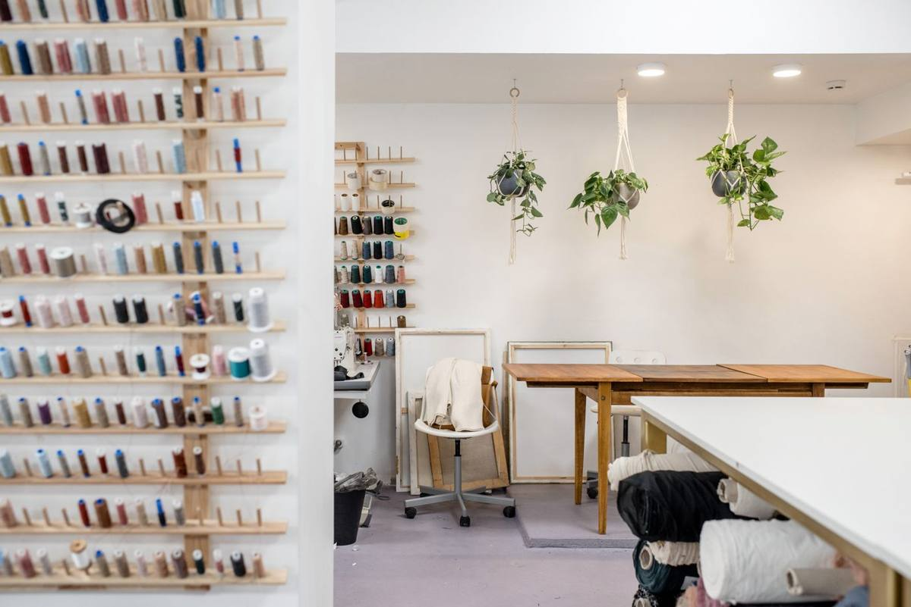

To clear a craft or sewing room, set aside the finished projects and anything with family meaning first, then pull out paints, solvents and spray glues for your city's chemical collection. Offer usable fabric and working machines to people who will use them. A crew can then haul the cabinets, tables, bins and remaining supplies in one visit.
A craft room fills slowly. A few bins of fabric become a wall of them. A second machine arrives and the first one never leaves. Scrapbook paper, yarn, ribbon, frames, beads and half-finished projects fill every drawer. Sometimes the person clearing it is the crafter, ready to take the room back. Often it is a family member clearing a parent's house, and the room is the hardest one to start. This post covers both, and the order that makes it manageable.
Start with what cannot be replaced
Before anything gets sorted by type, walk the room and pull out the things that matter for reasons other than use. Finished quilts, a sweater someone was knitting, a scrapbook with names and dates in it, a pattern box with handwritten notes. These are easy to miss when they are folded inside a bin of plain fabric.
Open every bin and every drawer. Unfinished projects are often tucked in with supplies, and a quilt top that took months can look like a pile of fabric pieces at a glance. If you are clearing a parent's room, give other family members a set date to say what they want before anything is offered elsewhere. Our estate cleanout checklist covers how to handle that step across a whole house.
Pull the paints, glues and solvents first
Most craft rooms hold a shelf of things that cannot go on our truck. Oil paints, paint thinner, turpentine, spray paint, spray adhesive, resin kits, glazes and some glues are household chemicals, and we do not haul them. The EPA notes that many paints, adhesives and hobby supplies release volatile organic compounds that affect indoor air quality, which is part of why they need careful handling.
Box them up separately and take them to your city's household chemical collection program. Plano residents, for example, can use the city's household chemical collection service, and most cities across the area run something similar. Our guide to what junk removal will and will not take lists the rest of the exclusions. Pull loose batteries out of craft lights, label makers and cordless glue guns too. The EPA's page on used household batteries explains why they should not go in the trash.
Check the machine cases before they go. Sewing machine cases, tackle boxes and thread drawers often hold small things people want back: a thimble from a grandmother, spare keys, cash, old photos. Open every case and every compartment before the crew carries it out.
Where the fabric and yarn can go
Fabric is the biggest part of most craft rooms by volume. Clean yardage, fat quarters and yarn in good shape are often welcome at quilting guilds, school art programs, senior centers and local charities that sew for hospitals or shelters. It is worth a call or two before the room is cleared, because one group may take most of it.
Textiles are a large share of what American households throw away. The EPA estimates that 17 million tons of textiles were generated in 2018 and that about 11.3 million tons went to landfills, according to its textiles material data. Passing usable fabric on keeps some of that out. Scraps, worn fabric and anything stained or musty can come out with the rest of the load.
If the closets in the same house hold clothes and linens, our closet cleanout guide covers soft goods. Shelves of craft books and pattern binders are handled the same way as the rest of the bookcase, which our post on boxes of books, bookcases and old paperwork walks through.
Machines, cutting tools and electronics
Working sewing machines, sergers and embroidery machines can find new homes through guilds, schools or a donation center. A Habitat for Humanity ReStore takes furniture and household goods in good condition, though each location decides what it accepts. Machines that no longer run can come out with the furniture.
Electronic cutting machines, label printers, laminators and computers used for patterns are electronics. Sign out of any account the machine uses, and if it has a connected computer or tablet, wipe it before it leaves. The EPA's page on electronics donation and recycling recommends passing working devices on and sending the rest to a recycler. Our guide to appliance and electronics disposal in North Texas covers the bigger pieces.
The furniture that built the room
Once the supplies are sorted, what is left is the furniture: sewing tables and cabinets, cutting tables, wire shelving, cube organizers, rolling carts, desks, a worn office chair and stacks of empty plastic bins. Some of these are heavy and awkward, especially sewing cabinets with a machine lift built in.
We handle the carrying and any disassembly needed to get pieces through a doorway. Sturdy pieces in good shape go to local donation partners where they can. It is the same work we do clearing a back bedroom in an older Dallas house that has been filling for decades, or carrying shelving and craft cabinets out of homes in The Colony. If the room shares a wall with a woodshop or a garage bench, our post on workshop and hobby room cleanouts covers the tools and lumber.
What we haul from a craft room
On a typical craft or sewing room pickup, we take:
- sewing tables, sewing cabinets and cutting tables
- shelving, cube organizers, rolling carts and desks
- sewing machines, sergers and embroidery machines
- cutting machines, printers, laminators and other wiped electronics
- fabric, scraps, yarn and batting
- scrapbook paper, frames, ribbon, beads and general supplies
- empty bins, boxes and packaging
What stays behind: paints, solvents, spray products, resins and anything else from the chemical shelf. Those go to your city's program. Where the rest goes after we load it is covered in where your junk goes after pickup. Our stated goal is to keep more than half of every load out of the landfill.
How the pickup runs
Send us a photo of the room, and mention anything heavy, like a sewing cabinet or a large cutting table, and whether it is upstairs. A crew looks at what you have and gives you a firm number before anything is loaded. The quote is the bill, and disposal is included. We are affordable and priced fair, based on how much there is to take.
You point, we carry, we sweep. These are our own crews, not gig labor. Call before noon and same afternoon is typical across the northern suburbs. When the keep pile is set aside, tell us what needs to go, or read how our furniture removal works for the bigger pieces.
Frequently asked questions
Do you take sewing machines?
Yes. Working and broken machines, sergers and embroidery machines all come out with the rest of the room. Working ones go to local donation partners where they can.
Can you take craft paint and glue?
No. Paints, solvents, spray adhesives and resins are household chemicals. Take them to your city's household chemical collection program, and we will haul everything else.
What should I do with leftover fabric?
Offer clean, usable fabric to quilting guilds, schools or charities that sew. Scraps and worn or stained fabric can go on our truck with the rest of the load.
Can you clear the room if I am not there?
Often, yes. Set aside what you are keeping, mark it clearly, and tell us how the crew gets in. We will confirm the plan and the price before anything is loaded.
Do you take the furniture apart?
When it is needed to get a piece out of the room, yes. Sewing cabinets, cutting tables and shelving are taken apart and carried out by the crew.
Keep what matters, send the chemicals to the city, pass on what someone else will use, and let the crew carry the rest. Then the room is yours again.